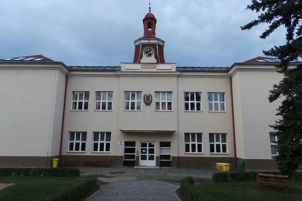
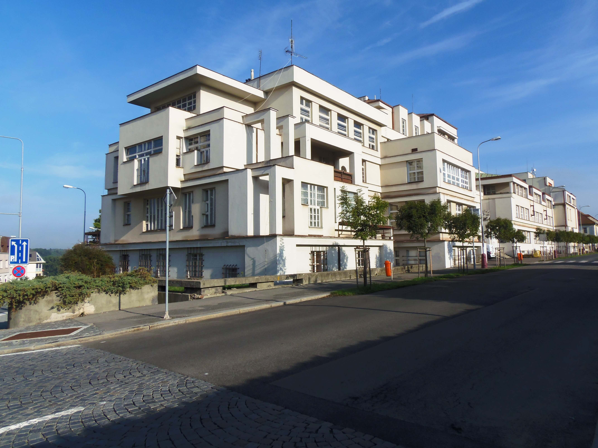

Chodil jsem na základní školu ZŠ Pražská 135 která se nachází ve městě ve kterém bydlím. Není to jediná škola která se v Benátkách nad Jizerou nachází. V Benátkách nad Jizerou se nachází celkem 3 základní školy.Základní škola na kterou jsem chodil já je podle mého názoru nejpreciznější a nejtěžší ve městě. Já to ale beru pozitivně, protože jsem alespoň nějak připravený.
Momentálně studuji na Střední škole která se jmenuje Střední průmyslová škola Mladá Boleslav. Jsem v prvním ročníku a přechod ze základní školy, i přesto že jsem byl dobře připravený, je velice těžký ale snad to nějak zvládnu. Budu chtít maturovat z Angličtiny.IT zaměření mě baví i když je to někdy náročné. Uvědomil jsem si že se musím učit jestli chci obdržet maturitu.
